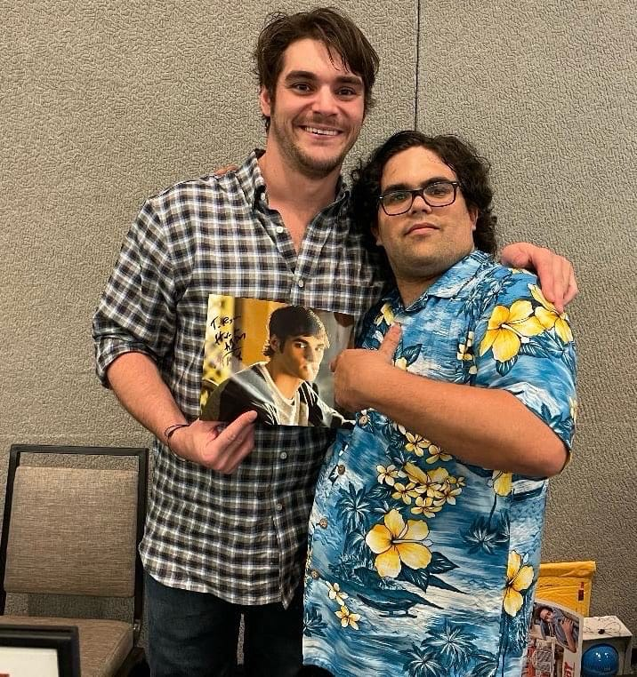
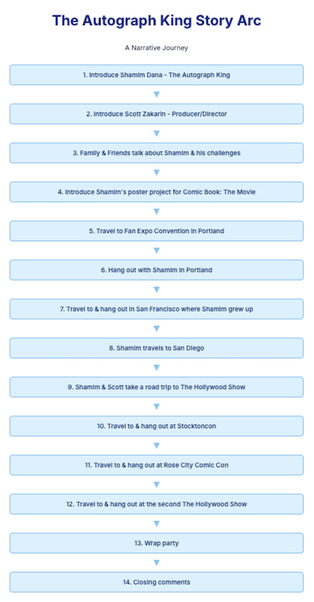

Josh Hunt - Project Case Study
**Project Title:** The Autograph King (Documentary Film)
**Role:** Film Editor, Co-Producer
**Company/Client:** Independent Production / Scott Zakarin
**Dates:** July 2024 - February 2025
**Project Type:** Feature Documentary
1. Project Overview & Context
Summary: "The Autograph King" is a documentary centered on a high-functioning 31-year-old man with autism and cerebral palsy who finds joy and connects with others through attending comic book conventions.
Overall Contribution: I inherited this project after nine months of stalled editing, with only a 2.5-hour raw string-out completed and no interviews assembled. My role involved comprehensively assessing and restructuring the footage to create a compelling, character-driven narrative. Everything was done in Adobe Premiere Pro.
View the Rough Cut Showreel: For a glimpse into the film's narrative and visual style, you can watch the Rough Cut Showreel on YouTube.
2. My Role
Specific Responsibilities:
- Systematically reviewed and meticulously dug through nearly a year's worth of unorganized raw footage to ascertain exactly what assets were available and salvageable.
- Efficiently "shaved the fat" from the initial 2.5-hour timeline, identifying key moments and removing extraneous material.
- Located and grouped clips sharing similar themes to construct a coherent story, effectively creating character development without a pre-existing script.
- Collaborated with the producer to craft a joyful and unique narrative, offering a fresh perspective often unseen in documentaries about individuals with disabilities.

The Autograph King, Shamim Dana, with RJ Mitte of Breaking Bad.
3. Process & Challenges
Workflow Description: My process began with an intensive audit of disorganized footage, followed by thematic organization in Adobe Premiere Pro, timeline refinement, and a creative storytelling approach to shape the documentary's emotional and narrative arc.
Challenges Faced:
- Challenge 1: Disorganized & Stalled Project (9 Months In): Inheriting a project with extensive raw footage that had been ineffectively edited for nine months, featuring only a 2.5-hour raw string-out and consolidated incomplete pieces, requiring deep dives to find raw source material.
- Solution: Conducted a thorough forensic assessment of all available footage, meticulously re-linking and organizing assets within Premiere Pro to establish a stable and workable project foundation.
- Challenge 2: Lack of Script & Narrative Structure: The film had been shot for almost a year without a script, resulting in vast, unstructured footage that lacked a clear narrative direction.
- Solution: Employed a thematic editing approach, identifying recurring themes, character moments, and emotional beats within the raw footage to organically build a compelling story with genuine character development.
- Challenge 3: Producer Nervousness & Sensitivity: The producer was initially very apprehensive about screening the rough cut to the main character and his family, given the sensitive nature of the subject.
- Solution: Focused on meticulously crafting a positive, respectful, and joyful narrative, emphasizing the main character's background, interests, and connections, which ultimately earned full support and positive feedback from the family.

4. Impact & Outcome
Key Results:
- Successfully transformed a stagnant project burdened by extensive unorganized footage into a cohesive, engaging, and joyful documentary narrative.
- Received overwhelmingly positive feedback and full support from the main character and his family, validating the sensitive and unique narrative approach.
- Crafted a film that aims to be a "breath of fresh air," offering an uplifting and connecting perspective that is unique within the documentary genre.
- The film is currently in the final stages of completion and is actively seeking a buyer, with strong potential for distribution.
Overall Learning/Growth: This project significantly honed my skills in narrative leadership within unstructured environments, demonstrating a robust ability to problem-solve, uncover, and sculpt compelling stories from challenging raw material. It also enhanced my expertise in project recovery and sensitive, character-driven storytelling.